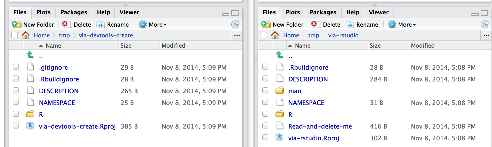

Write your own R package
Bernhard Konrad
2014-11-10
Write your own R package
This is a step-by-step instruction on how to create your first R package.
- This will be much easier than you think
- Bundle helper functions for your other projects
- Share your code
- Add (some) documentation and examples
- Add tests
Getting Started
In this tutorial we will develop a package that provides the function gameday. This function takes one argument teamname, the name of your favorite NHL team, and returns TRUE if this team has a game today, and FALSE otherwise. The function will actually be a one-liner because we can read this information from the web.
Packages that you will need
Please make sure to run install.packages('devtools') and install.packages('roxygen2').
@jennybc: Let’s say we assume everyone is running very current R (3.1.0 or higher?) and RStudio. I also recommend that everyone start with update.packages(). Specifically, devtools, roxygen2, testthat, and knitr should all be very current, so why not just update everything?
Some Background and pointers
You can skip this section on your first read if you want to dive right into the hands-on exercise.
@jennybc: TODO for me. Might link to slides.
Setting up the folder structure
- R expects a certain folder structure for your package. Luckily,
RStudio, usingdevtools, does this work for you. - In RStudio: File -> New Project -> New Directory -> R Package.
- Package name
gamedayand please also make sure that Create a git repository is checked.
You see that this created a galore of files and folders. Let’s see what they are.
@jennybc: No, sadly, RStudio does not (yet) use devtools for this, though apparently it soon will. In the meantime, let’s follow the advice given in Hadley’s book, which is to use devtools::create("path/to/package/pkgname"), followed by double clicking on the associated pkgname.Rproj file or RStudio File > New Project > Existing Directory … pointed at path/to/package/pkgname and with Create a git repository checked. Here’s a side-by-side comparison of freshly created R packages via the two different workflows (I think I forgot to make it a Git repo via RStudio, but that’s neither here nor there):

Files that make a packages
- Helper files that we don’t have to worry about:
.gitignoreis the usual ignore file for Git. We don’t have to change it..Rbuildignoreis an ignore file for the R package building process. We can talk about this later.gameday.Rprojis the usual file for an RStudio project. We don’t have to change it.NAMESPACEis a very important file, but we will never edit this by hand.roxygen2will maintain this for us.
R/finally, this is where the actual R code will go.DESCRIPTIONholds meta information about your package. We will modify this first.
@jennybc: If you submit to my plea that we init package with devtools::create() two bullet points go away. I have deleted them for you!
DESCRIPTION FILE
Here is where we add information about the package (gameday) and its authors (us). Some fields are pre-filled, but many more fields can be added as necessary.
@jennybc: Maybe you should mention that this is how it looks after editing? Why do you have Type: Package? Start with version 0.1 or, as Hadley’s book recommends, 0.0.0.9000. Omit the date. Use the new syntax for authors, contributors, etc. Pick single author (you) or maintainer + contributor (you + me) as you see fit. Single author might be more relevant to them today. Hard line breaks and indents in the description. Make it depend on R now or future for safety. Put LazyData true. I’ve just put in what I think this should be.
Package: gameday
Title: Let R tell you if your NHL team plays today
Version: 0.0.0.9000
Authors@R: person("Bernhard", "Konrad", email = "bernhard.konrad@gmail.com",
role = c("aut", "cre"))
Authors@R: as.person(c(
"Bernhard Konrad <bernhard.konrad@gmail.com> [aut, cre]",
"Jennifer Bryan <jenny@stat.ubc.ca> [aut]"
))
Description: Query live.nhle.com to check if your NHL team is listed on
the teams that play today
Depends: R (>= 3.1.1)
License: CC0
LazyData: trueLet’s briefly discuss some of those fields.
- You must specify a
Maintaineror __cre_ator and must provide a contact email. LicenseCC0 means that we dedicate our package to the public domain and waive all of our rights. Anyone can freely use/adapt/modify/sell this work without our permission. We also don’t provide any warranties about liability or correctness. You can check our other creative common licenses.
The actual R code
The R code that our package provides is in the R folder. You see that a file gameday.R is already there. We will leave this alone for now. Instead, let’s create a new R script and save it in the R folder with the name gday.R.
The content is the following:
#' Is it Gameday?
#'
#' This function returns TRUE if your NHL team plays today
#' @param teamname Defaults to "canucks"
#' @param date The (potential game) day you want to check
#' @return \code{TRUE} if \code{teamname} has an NHL game on \code{date},
#' \code{FALSE} otherwise
#' @keywords misc
#' @note case in \code{teamname} is ignored
#' @export
#' @examples
#' gday()
#' gday("canadiens")
#' gday("Bruins", "2014-11-07")
gday <- function(teamname="canucks") {
url <- paste0("http://live.nhle.com/GameData/GCScoreboard/", Sys.Date(), ".jsonp")
grepl(teamname, getURL(url), ignore.case=TRUE)
}TODO: explain function gday. Explain roxygen syntax (split the above up in two steps). Add dependency RCurl to DESCRIPTION.
Documentation for the package itself
#' More documentation
#'
#' and some more stuff
#'
#' and even more details
#' that spans two lines
#'
#' @docType package
#' @name gameday
NULLTODO: explain roxygen syntax and why NULL
Let devtools, roxygen2 do the documenation for you
Run document() and Build & Reload for testing.
Publish on GitHub
- commit files locally
- Create empty repo on github
- Add remote: Shell -> Terminal -> git remote add … -> git push -u origin master
- install from github